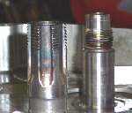
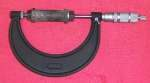

Fasteners hold every part of the bike together. They look simple but differ in strength, thread and locking method. Using the right one in the right place matters, most of all on the engine, wheels, brakes and steering.
What it does
A tightened bolt acts like a spring. It stretches and clamps the parts together. A weak or wrong bolt can fail, and a failed cam sprocket bolt can destroy an engine. A fender bolt does not need so much strength.
Signs it is worn or failing
- Bolt stretched, thread damaged or head rounded: Screw or bolt will not come out, or its head is damaged.
- Fasteners work loose: Nuts and bolts keep coming loose.
- Bolts that feel soft when tightened (they yield) must be replaced.
When to replace it
Replace a bolt that has yielded, a stretched or necked bolt, a bent or flat lock washer, a worn locknut, a bent tab washer and any bolt with damaged thread. Keep all good bolts when you strip the bike. They rarely wear.
What to match when buying
- Diameter, length and thread pitch. A thread gauge tells coarse from fine.
- Strength grade, from the head marking. Many are unmarked, so use the same type as the original.
- Head shape. Waisted bolts and studs for high-stress joints must be replaced like for like.
- Left or right thread. The manual lists left-hand threads.
- Phillips screws: ask for JIS. See Choose the right Phillips bit.
Fitting notes
- Coarse threads go into castings. Nuts normally use fine threads.
- Tighten to the torque in the manual with a torque wrench. Never run bolts in hard with an impact gun.
- Use the locking part the manual shows: lock washer, locknut, thread locker, cotter pin or safety wire. See Identify bolt strength, thread and locking types and Fit cotter pins.